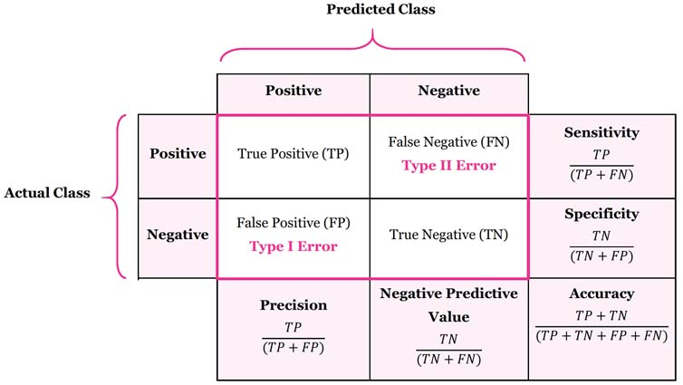
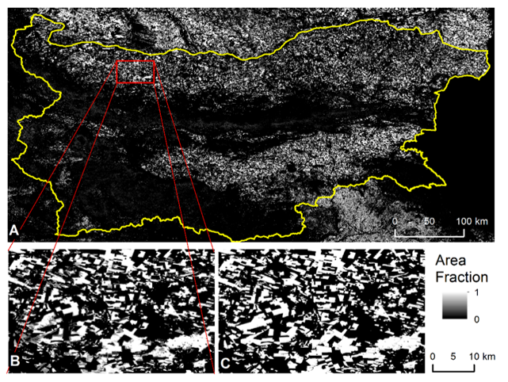
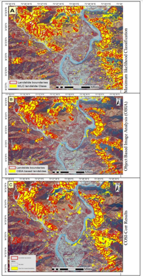

7 Week 7 - Classification II
7.1 Summary
This summary provides an overview of the continuation of learning about classification covering sub-pixel classification, accuracy assessment and cross-validation.
Some data comes pre-classified.
- Dynamic World - estimates things like tree cover and built up areas using almost real-time Sentinel-2 data and a semi-supervised approach. It uses a Convolutional Neural Networks (CNN), a form of deep learning, and accuracy is assessed using a confusion matrix.
Object based image analysis (OBIA)
Considers similarity or difference of the cells = superpixels - k=number of super pixels
Simple Linear Iterative Clustering (SLIC) - distance from the point to the centre of the pixel, homogeneity of colours
Measures compactness - balance between distance and colour
Takes the average values per object and classifies them
Sub-pixel analysis
Pixel with a range of land covers within it - classify this as one land cover or several?
Spectral Mixture Analysis (SMA) - proportion of landcover per pixel
Accuracy assessment
How accurate is the model for assigning classes on unseen data
Confusion matrix displays different measures - correct prediction of a class, correct prediction of a negative class, predicting a positive but it is negative, predicting a negative but it is positive
Omission and commission errors of landcover from the correct class
Kappa - how closely the classifications match the labeled data, accuracy compared to the results by chance
Test data for accuracy - consider a sampling strategy such as random sampling or stratified sampling to produce an error matrix
Cross-validation - train models on subsets of the input data - can help to identify issues of overfitting and improve unseen data prediction
Leave one out cross-validation - training data except 1 used and repeated throughout the dataset
Spatial cross-validation
Do we need to consider spatial autocorrelation? There may be spatial autocorrelation between training and testing datasets - especially if they are too close together
Migitate this by spatially partitioning the folded data to stop the training and testing dataset from being near to each other
Without considering spatial autocorrelation the model would be too accurate and perform badly on unseen data
7.2 Applications
This application section will focus on subpixel and object based image analysis which have been mentioned in literature.
Sub-pixel classification has been used to identify crop types in Bulgaria using a time series of NDVI data (Dimitrov, et al., 2019). Two classification models, SVR and artifical neural network (ANN) were used, which can contribute to understanding seasonal crop growth and change, and be integrated within other agricultural applications.

Another study compared pixel, sub-pixel and object based image analysis for landslide detection in Lesser Himalaya, Pakistan, which is a seismically active area (Saba, et al., 2023). The highest level of accuracy was from the object based image analysis, although it was mentioned that the method used may not be applicable to different terrains. The image below demonstrates the output for pixel, subpixel and object-based classification (Sorry for the image quality issue! The main takeaway from the image is that there are clear differences between each classification).

This is important for providing timely emergency responses to landslide disasters triggered by rainfall or earthquakes.
There are calls for a benchmark in the future for object detection and sub-pixel analysis in remote sensing imagery, introducting hierarchy detection in the models and proposing new evaluation metrics (Sun, et al., 2022). Perhaps this is indicative of a need for more established and standardised models and algorithms which can be applied across different datasets and applications.
7.3 Reflection
This lecture was very interesting as it relates to one of my other assignments for a core module on the geography master’s course where we have to perform a machine learning model to classify any outdoor scenes images, and it could use remote sensing imagery! The lecture gave me more insight into what to consider especially during accuracy assessments, and I can make use of GEE as well for it. I find object classification most interesting in the area of classification so I may choose a topic where a specific object is identified or not in an image. I am interested to see how sub-pixel classification and object classification will advance in the future. I did find the content difficult to fully understand, but once applied to specific examples it made more sense as I find it easier to understand things within applied contexts or when I apply the techniques myself.
7.4 References
Dimitrov, P., Dong, Q., et al. (2019) ‘Sub-Pixel Crop Type Classification Using PROBA-V 100 m NDVI Time Series and Reference Data from Sentinel-2 Classifications’, Remote Sensing, 11
Saba, S., Ali, M., et al. (2023) ‘Comparison of pixel, sub-pixel and object-based image analysis techniques for co-seismic landslides detection in seismically active area in Lesser Himalaya, Pakistan’, Natural Hazards, 115, pp. 2383-2398
Sirsat, M. (2019) ‘What is Confusion Matrix and Advanced Classification Metrics?’, available at: https://manisha-sirsat.blogspot.com/2019/04/confusion-matrix.html (accessed: 18.3.23)
Sun, X., Wang, P. and Yan, Z. (2022) ‘FAIR1M: A benchmark dataset for fine-grained object recognition in high-resolution remote sensing imagery’, ISPRS Journal of Photogrammetry and Remote Sensing, 184, pp. 116-130